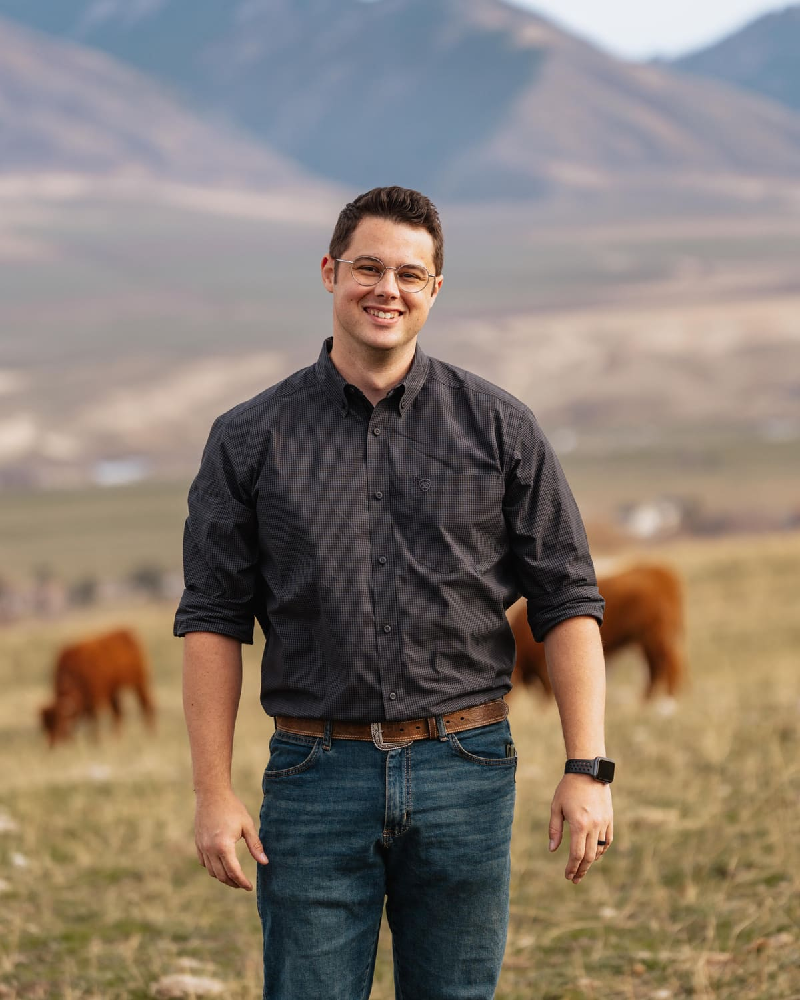

Corporate Photography
Leadership portraits, facilities, operations, culture, recruiting, and internal brand libraries.
Photography - Video - Brand Content
Bison Creek Media creates high-impact visual libraries for businesses, ranches, brands, and organizations that refuse to let generic content tell their story.
Your content library should work as hard as you do.
Why Bison Creek
We build custom photo and video libraries around your people, your operation, and your brand. The result is content that feels credible, useful, and unmistakably yours.
Services
Every project is designed around practical use cases, not just a single campaign.
Leadership portraits, facilities, operations, culture, recruiting, and internal brand libraries.
Campaign-ready photography and short-form video designed for digital, print, and social use.
Authentic content for ranches, outfitters, rodeos, conservation groups, and outdoor brands.
Shot planning, usage mapping, campaign concepts, content calendars, and long-term asset strategy.
Selected Work
Click any project to open the full image gallery.
Process
We identify audiences, channels, deliverables, and the gaps in your current content library.
We create a practical shot plan around people, locations, operations, and campaign priorities.
You receive a curated set of versatile assets ready for marketing, sales, recruiting, and social media.

About
Bison Creek Media is led by Michael Flores, a communications and visual media professional with experience supporting major organizations, complex operations, and high-visibility campaigns.
The goal is straightforward: create content that looks strong, feels honest, and gives your team something useful long after the shoot is over.
Discuss your project ->The best brand content does not feel manufactured. It feels like proof.
Bison Creek Media
Start a Project
Share the basics below. This form opens your email app with the project details prefilled.
Portfolio